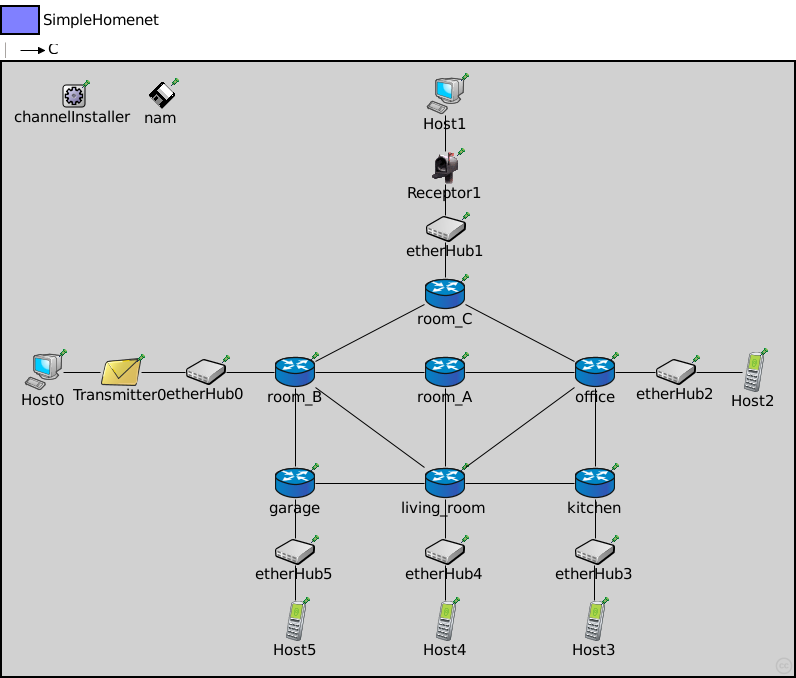

This documentation is released under the Creative Commons license
This documentation is released under the Creative Commons licenseThe network remains the same, except for the new modules for statistics. There is just one app connection between host1 and host0.
| Name | Value | Description |
|---|---|---|
| isNetwork | ||
| display | p=10,10;b=736,568;bgb=792,614 |
| Name | Type | Default value | Description |
|---|---|---|---|
| nam.logfile | string | "" |
the name of the logfile ("trace.nam") |
| nam.prolog | string | "" | |
| room_A.ospf.ospfConfigFile | string |
xml file containing the full OSPF AS configuration |
|
| room_A.networkLayer.ip.procDelay | double | 0s | |
| room_A.networkLayer.arp.retryTimeout | double | 1s |
number seconds ARP waits between retries to resolve an IP address |
| room_A.networkLayer.arp.retryCount | int | 3 |
number of times ARP will attempt to resolve an IP address |
| room_A.networkLayer.arp.cacheTimeout | double | 120s |
number seconds unused entries in the cache will time out |
| room_A.ppp.ppp.mtu | int | 4470 | |
| room_A.eth.mac.promiscuous | bool | false |
if true, all packets are received, otherwise only the ones with matching destination MAC address |
| room_A.eth.mac.address | string | "auto" |
MAC address as hex string (12 hex digits), or "auto". "auto" values will be replaced by a generated MAC address in init stage 0. |
| room_A.eth.mac.txrate | double | 100Mbps |
maximum data rate supported by this station (bit/s); actually chosen speed may be lower due to auto- configuration. 0 means fully auto-configured. |
| room_A.eth.mac.duplexEnabled | bool | true |
whether duplex mode can be enabled or not; whether MAC will actually use duplex mode depends on the result of the auto-configuration process (duplex is only possible with DTE-to-DTE connection). |
| room_A.eth.mac.mtu | int | 1500 | |
| room_C.ospf.ospfConfigFile | string |
xml file containing the full OSPF AS configuration |
|
| room_C.networkLayer.ip.procDelay | double | 0s | |
| room_C.networkLayer.arp.retryTimeout | double | 1s |
number seconds ARP waits between retries to resolve an IP address |
| room_C.networkLayer.arp.retryCount | int | 3 |
number of times ARP will attempt to resolve an IP address |
| room_C.networkLayer.arp.cacheTimeout | double | 120s |
number seconds unused entries in the cache will time out |
| room_C.ppp.ppp.mtu | int | 4470 | |
| room_C.eth.mac.promiscuous | bool | false |
if true, all packets are received, otherwise only the ones with matching destination MAC address |
| room_C.eth.mac.address | string | "auto" |
MAC address as hex string (12 hex digits), or "auto". "auto" values will be replaced by a generated MAC address in init stage 0. |
| room_C.eth.mac.txrate | double | 100Mbps |
maximum data rate supported by this station (bit/s); actually chosen speed may be lower due to auto- configuration. 0 means fully auto-configured. |
| room_C.eth.mac.duplexEnabled | bool | true |
whether duplex mode can be enabled or not; whether MAC will actually use duplex mode depends on the result of the auto-configuration process (duplex is only possible with DTE-to-DTE connection). |
| room_C.eth.mac.mtu | int | 1500 | |
| garage.ospf.ospfConfigFile | string |
xml file containing the full OSPF AS configuration |
|
| garage.networkLayer.ip.procDelay | double | 0s | |
| garage.networkLayer.arp.retryTimeout | double | 1s |
number seconds ARP waits between retries to resolve an IP address |
| garage.networkLayer.arp.retryCount | int | 3 |
number of times ARP will attempt to resolve an IP address |
| garage.networkLayer.arp.cacheTimeout | double | 120s |
number seconds unused entries in the cache will time out |
| garage.ppp.ppp.mtu | int | 4470 | |
| garage.eth.mac.promiscuous | bool | false |
if true, all packets are received, otherwise only the ones with matching destination MAC address |
| garage.eth.mac.address | string | "auto" |
MAC address as hex string (12 hex digits), or "auto". "auto" values will be replaced by a generated MAC address in init stage 0. |
| garage.eth.mac.txrate | double | 100Mbps |
maximum data rate supported by this station (bit/s); actually chosen speed may be lower due to auto- configuration. 0 means fully auto-configured. |
| garage.eth.mac.duplexEnabled | bool | true |
whether duplex mode can be enabled or not; whether MAC will actually use duplex mode depends on the result of the auto-configuration process (duplex is only possible with DTE-to-DTE connection). |
| garage.eth.mac.mtu | int | 1500 | |
| kitchen.ospf.ospfConfigFile | string |
xml file containing the full OSPF AS configuration |
|
| kitchen.networkLayer.ip.procDelay | double | 0s | |
| kitchen.networkLayer.arp.retryTimeout | double | 1s |
number seconds ARP waits between retries to resolve an IP address |
| kitchen.networkLayer.arp.retryCount | int | 3 |
number of times ARP will attempt to resolve an IP address |
| kitchen.networkLayer.arp.cacheTimeout | double | 120s |
number seconds unused entries in the cache will time out |
| kitchen.ppp.ppp.mtu | int | 4470 | |
| kitchen.eth.mac.promiscuous | bool | false |
if true, all packets are received, otherwise only the ones with matching destination MAC address |
| kitchen.eth.mac.address | string | "auto" |
MAC address as hex string (12 hex digits), or "auto". "auto" values will be replaced by a generated MAC address in init stage 0. |
| kitchen.eth.mac.txrate | double | 100Mbps |
maximum data rate supported by this station (bit/s); actually chosen speed may be lower due to auto- configuration. 0 means fully auto-configured. |
| kitchen.eth.mac.duplexEnabled | bool | true |
whether duplex mode can be enabled or not; whether MAC will actually use duplex mode depends on the result of the auto-configuration process (duplex is only possible with DTE-to-DTE connection). |
| kitchen.eth.mac.mtu | int | 1500 | |
| office.ospf.ospfConfigFile | string |
xml file containing the full OSPF AS configuration |
|
| office.networkLayer.ip.procDelay | double | 0s | |
| office.networkLayer.arp.retryTimeout | double | 1s |
number seconds ARP waits between retries to resolve an IP address |
| office.networkLayer.arp.retryCount | int | 3 |
number of times ARP will attempt to resolve an IP address |
| office.networkLayer.arp.cacheTimeout | double | 120s |
number seconds unused entries in the cache will time out |
| office.ppp.ppp.mtu | int | 4470 | |
| office.eth.mac.promiscuous | bool | false |
if true, all packets are received, otherwise only the ones with matching destination MAC address |
| office.eth.mac.address | string | "auto" |
MAC address as hex string (12 hex digits), or "auto". "auto" values will be replaced by a generated MAC address in init stage 0. |
| office.eth.mac.txrate | double | 100Mbps |
maximum data rate supported by this station (bit/s); actually chosen speed may be lower due to auto- configuration. 0 means fully auto-configured. |
| office.eth.mac.duplexEnabled | bool | true |
whether duplex mode can be enabled or not; whether MAC will actually use duplex mode depends on the result of the auto-configuration process (duplex is only possible with DTE-to-DTE connection). |
| office.eth.mac.mtu | int | 1500 | |
| room_B.ospf.ospfConfigFile | string |
xml file containing the full OSPF AS configuration |
|
| room_B.networkLayer.ip.procDelay | double | 0s | |
| room_B.networkLayer.arp.retryTimeout | double | 1s |
number seconds ARP waits between retries to resolve an IP address |
| room_B.networkLayer.arp.retryCount | int | 3 |
number of times ARP will attempt to resolve an IP address |
| room_B.networkLayer.arp.cacheTimeout | double | 120s |
number seconds unused entries in the cache will time out |
| room_B.ppp.ppp.mtu | int | 4470 | |
| room_B.eth.mac.promiscuous | bool | false |
if true, all packets are received, otherwise only the ones with matching destination MAC address |
| room_B.eth.mac.address | string | "auto" |
MAC address as hex string (12 hex digits), or "auto". "auto" values will be replaced by a generated MAC address in init stage 0. |
| room_B.eth.mac.txrate | double | 100Mbps |
maximum data rate supported by this station (bit/s); actually chosen speed may be lower due to auto- configuration. 0 means fully auto-configured. |
| room_B.eth.mac.duplexEnabled | bool | true |
whether duplex mode can be enabled or not; whether MAC will actually use duplex mode depends on the result of the auto-configuration process (duplex is only possible with DTE-to-DTE connection). |
| room_B.eth.mac.mtu | int | 1500 | |
| living_room.ospf.ospfConfigFile | string |
xml file containing the full OSPF AS configuration |
|
| living_room.networkLayer.ip.procDelay | double | 0s | |
| living_room.networkLayer.arp.retryTimeout | double | 1s |
number seconds ARP waits between retries to resolve an IP address |
| living_room.networkLayer.arp.retryCount | int | 3 |
number of times ARP will attempt to resolve an IP address |
| living_room.networkLayer.arp.cacheTimeout | double | 120s |
number seconds unused entries in the cache will time out |
| living_room.ppp.ppp.mtu | int | 4470 | |
| living_room.eth.mac.promiscuous | bool | false |
if true, all packets are received, otherwise only the ones with matching destination MAC address |
| living_room.eth.mac.address | string | "auto" |
MAC address as hex string (12 hex digits), or "auto". "auto" values will be replaced by a generated MAC address in init stage 0. |
| living_room.eth.mac.txrate | double | 100Mbps |
maximum data rate supported by this station (bit/s); actually chosen speed may be lower due to auto- configuration. 0 means fully auto-configured. |
| living_room.eth.mac.duplexEnabled | bool | true |
whether duplex mode can be enabled or not; whether MAC will actually use duplex mode depends on the result of the auto-configuration process (duplex is only possible with DTE-to-DTE connection). |
| living_room.eth.mac.mtu | int | 1500 | |
| Host0.pingApp.destAddr | string | "" |
destination IP or IPv6 address |
| Host0.pingApp.srcAddr | string | "" |
source IP or IPv6 address (useful with multi-homing) |
| Host0.pingApp.packetSize | double | 56B |
of ping payload, in bytes |
| Host0.pingApp.interval | double | 1s |
time to wait between pings (can be random) |
| Host0.pingApp.hopLimit | double | 32 |
TTL or hopLimit for IP packets |
| Host0.pingApp.count | double | 0 |
stop after count ping requests, 0 means continuously |
| Host0.pingApp.startTime | double | uniform(0s,this.interval) |
send first ping at startTime |
| Host0.pingApp.stopTime | double | 0s |
send no pings after stopTime, 0 means forever |
| Host0.pingApp.printPing | bool | true |
dump on stdout |
| Host0.networkLayer.ip.procDelay | double | 0s | |
| Host0.networkLayer.arp.retryTimeout | double | 1s |
number seconds ARP waits between retries to resolve an IP address |
| Host0.networkLayer.arp.retryCount | int | 3 |
number of times ARP will attempt to resolve an IP address |
| Host0.networkLayer.arp.cacheTimeout | double | 120s |
number seconds unused entries in the cache will time out |
| Host0.eth.mac.promiscuous | bool | false |
if true, all packets are received, otherwise only the ones with matching destination MAC address |
| Host0.eth.mac.address | string | "auto" |
MAC address as hex string (12 hex digits), or "auto". "auto" values will be replaced by a generated MAC address in init stage 0. |
| Host0.eth.mac.txrate | double | 100Mbps |
maximum data rate supported by this station (bit/s); actually chosen speed may be lower due to auto- configuration. 0 means fully auto-configured. |
| Host0.eth.mac.duplexEnabled | bool | true |
whether duplex mode can be enabled or not; whether MAC will actually use duplex mode depends on the result of the auto-configuration process (duplex is only possible with DTE-to-DTE connection). |
| Host0.eth.mac.mtu | int | 1500 | |
| Host0.eth.dropsGenerator.dropsVector | string | "" |
the dropsVector format is "<packetNumber>;<packetNumber>;...;" packet numbers in ascending order e.g. "5;6;12;13;" |
| Host0.ext.filterString | string | ||
| Host0.ext.device | string | ||
| Host0.ext.mtu | int | 1500 | |
| Host0.tcpdump.dumpFile | string | "" | |
| Host0.tcpdump.threadEnable | bool | false | |
| Host0.tcpdump.snaplen | int | 65535 | |
| Host0.tcpdump.verbosity | int | 0 | |
| Host1.pingApp.destAddr | string | "" |
destination IP or IPv6 address |
| Host1.pingApp.srcAddr | string | "" |
source IP or IPv6 address (useful with multi-homing) |
| Host1.pingApp.packetSize | double | 56B |
of ping payload, in bytes |
| Host1.pingApp.interval | double | 1s |
time to wait between pings (can be random) |
| Host1.pingApp.hopLimit | double | 32 |
TTL or hopLimit for IP packets |
| Host1.pingApp.count | double | 0 |
stop after count ping requests, 0 means continuously |
| Host1.pingApp.startTime | double | uniform(0s,this.interval) |
send first ping at startTime |
| Host1.pingApp.stopTime | double | 0s |
send no pings after stopTime, 0 means forever |
| Host1.pingApp.printPing | bool | true |
dump on stdout |
| Host1.networkLayer.ip.procDelay | double | 0s | |
| Host1.networkLayer.arp.retryTimeout | double | 1s |
number seconds ARP waits between retries to resolve an IP address |
| Host1.networkLayer.arp.retryCount | int | 3 |
number of times ARP will attempt to resolve an IP address |
| Host1.networkLayer.arp.cacheTimeout | double | 120s |
number seconds unused entries in the cache will time out |
| Host1.eth.mac.promiscuous | bool | false |
if true, all packets are received, otherwise only the ones with matching destination MAC address |
| Host1.eth.mac.address | string | "auto" |
MAC address as hex string (12 hex digits), or "auto". "auto" values will be replaced by a generated MAC address in init stage 0. |
| Host1.eth.mac.txrate | double | 100Mbps |
maximum data rate supported by this station (bit/s); actually chosen speed may be lower due to auto- configuration. 0 means fully auto-configured. |
| Host1.eth.mac.duplexEnabled | bool | true |
whether duplex mode can be enabled or not; whether MAC will actually use duplex mode depends on the result of the auto-configuration process (duplex is only possible with DTE-to-DTE connection). |
| Host1.eth.mac.mtu | int | 1500 | |
| Host1.ext.filterString | string | ||
| Host1.ext.device | string | ||
| Host1.ext.mtu | int | 1500 | |
| Host1.tcpdump.dumpFile | string | "" | |
| Host1.tcpdump.threadEnable | bool | false | |
| Host1.tcpdump.snaplen | int | 65535 | |
| Host1.tcpdump.verbosity | int | 0 | |
| Host2.pingApp.destAddr | string | "" |
destination IP or IPv6 address |
| Host2.pingApp.srcAddr | string | "" |
source IP or IPv6 address (useful with multi-homing) |
| Host2.pingApp.packetSize | double | 56B |
of ping payload, in bytes |
| Host2.pingApp.interval | double | 1s |
time to wait between pings (can be random) |
| Host2.pingApp.hopLimit | double | 32 |
TTL or hopLimit for IP packets |
| Host2.pingApp.count | double | 0 |
stop after count ping requests, 0 means continuously |
| Host2.pingApp.startTime | double | uniform(0s,this.interval) |
send first ping at startTime |
| Host2.pingApp.stopTime | double | 0s |
send no pings after stopTime, 0 means forever |
| Host2.pingApp.printPing | bool | true |
dump on stdout |
| Host2.networkLayer.ip.procDelay | double | 0s | |
| Host2.networkLayer.arp.retryTimeout | double | 1s |
number seconds ARP waits between retries to resolve an IP address |
| Host2.networkLayer.arp.retryCount | int | 3 |
number of times ARP will attempt to resolve an IP address |
| Host2.networkLayer.arp.cacheTimeout | double | 120s |
number seconds unused entries in the cache will time out |
| Host2.eth.mac.promiscuous | bool | false |
if true, all packets are received, otherwise only the ones with matching destination MAC address |
| Host2.eth.mac.address | string | "auto" |
MAC address as hex string (12 hex digits), or "auto". "auto" values will be replaced by a generated MAC address in init stage 0. |
| Host2.eth.mac.txrate | double | 100Mbps |
maximum data rate supported by this station (bit/s); actually chosen speed may be lower due to auto- configuration. 0 means fully auto-configured. |
| Host2.eth.mac.duplexEnabled | bool | true |
whether duplex mode can be enabled or not; whether MAC will actually use duplex mode depends on the result of the auto-configuration process (duplex is only possible with DTE-to-DTE connection). |
| Host2.eth.mac.mtu | int | 1500 | |
| Host2.ext.filterString | string | ||
| Host2.ext.device | string | ||
| Host2.ext.mtu | int | 1500 | |
| Host2.tcpdump.dumpFile | string | "" | |
| Host2.tcpdump.threadEnable | bool | false | |
| Host2.tcpdump.snaplen | int | 65535 | |
| Host2.tcpdump.verbosity | int | 0 | |
| Host3.pingApp.destAddr | string | "" |
destination IP or IPv6 address |
| Host3.pingApp.srcAddr | string | "" |
source IP or IPv6 address (useful with multi-homing) |
| Host3.pingApp.packetSize | double | 56B |
of ping payload, in bytes |
| Host3.pingApp.interval | double | 1s |
time to wait between pings (can be random) |
| Host3.pingApp.hopLimit | double | 32 |
TTL or hopLimit for IP packets |
| Host3.pingApp.count | double | 0 |
stop after count ping requests, 0 means continuously |
| Host3.pingApp.startTime | double | uniform(0s,this.interval) |
send first ping at startTime |
| Host3.pingApp.stopTime | double | 0s |
send no pings after stopTime, 0 means forever |
| Host3.pingApp.printPing | bool | true |
dump on stdout |
| Host3.networkLayer.ip.procDelay | double | 0s | |
| Host3.networkLayer.arp.retryTimeout | double | 1s |
number seconds ARP waits between retries to resolve an IP address |
| Host3.networkLayer.arp.retryCount | int | 3 |
number of times ARP will attempt to resolve an IP address |
| Host3.networkLayer.arp.cacheTimeout | double | 120s |
number seconds unused entries in the cache will time out |
| Host3.eth.mac.promiscuous | bool | false |
if true, all packets are received, otherwise only the ones with matching destination MAC address |
| Host3.eth.mac.address | string | "auto" |
MAC address as hex string (12 hex digits), or "auto". "auto" values will be replaced by a generated MAC address in init stage 0. |
| Host3.eth.mac.txrate | double | 100Mbps |
maximum data rate supported by this station (bit/s); actually chosen speed may be lower due to auto- configuration. 0 means fully auto-configured. |
| Host3.eth.mac.duplexEnabled | bool | true |
whether duplex mode can be enabled or not; whether MAC will actually use duplex mode depends on the result of the auto-configuration process (duplex is only possible with DTE-to-DTE connection). |
| Host3.eth.mac.mtu | int | 1500 | |
| Host3.ext.filterString | string | ||
| Host3.ext.device | string | ||
| Host3.ext.mtu | int | 1500 | |
| Host3.tcpdump.dumpFile | string | "" | |
| Host3.tcpdump.threadEnable | bool | false | |
| Host3.tcpdump.snaplen | int | 65535 | |
| Host3.tcpdump.verbosity | int | 0 | |
| Host4.pingApp.destAddr | string | "" |
destination IP or IPv6 address |
| Host4.pingApp.srcAddr | string | "" |
source IP or IPv6 address (useful with multi-homing) |
| Host4.pingApp.packetSize | double | 56B |
of ping payload, in bytes |
| Host4.pingApp.interval | double | 1s |
time to wait between pings (can be random) |
| Host4.pingApp.hopLimit | double | 32 |
TTL or hopLimit for IP packets |
| Host4.pingApp.count | double | 0 |
stop after count ping requests, 0 means continuously |
| Host4.pingApp.startTime | double | uniform(0s,this.interval) |
send first ping at startTime |
| Host4.pingApp.stopTime | double | 0s |
send no pings after stopTime, 0 means forever |
| Host4.pingApp.printPing | bool | true |
dump on stdout |
| Host4.networkLayer.ip.procDelay | double | 0s | |
| Host4.networkLayer.arp.retryTimeout | double | 1s |
number seconds ARP waits between retries to resolve an IP address |
| Host4.networkLayer.arp.retryCount | int | 3 |
number of times ARP will attempt to resolve an IP address |
| Host4.networkLayer.arp.cacheTimeout | double | 120s |
number seconds unused entries in the cache will time out |
| Host4.eth.mac.promiscuous | bool | false |
if true, all packets are received, otherwise only the ones with matching destination MAC address |
| Host4.eth.mac.address | string | "auto" |
MAC address as hex string (12 hex digits), or "auto". "auto" values will be replaced by a generated MAC address in init stage 0. |
| Host4.eth.mac.txrate | double | 100Mbps |
maximum data rate supported by this station (bit/s); actually chosen speed may be lower due to auto- configuration. 0 means fully auto-configured. |
| Host4.eth.mac.duplexEnabled | bool | true |
whether duplex mode can be enabled or not; whether MAC will actually use duplex mode depends on the result of the auto-configuration process (duplex is only possible with DTE-to-DTE connection). |
| Host4.eth.mac.mtu | int | 1500 | |
| Host4.ext.filterString | string | ||
| Host4.ext.device | string | ||
| Host4.ext.mtu | int | 1500 | |
| Host4.tcpdump.dumpFile | string | "" | |
| Host4.tcpdump.threadEnable | bool | false | |
| Host4.tcpdump.snaplen | int | 65535 | |
| Host4.tcpdump.verbosity | int | 0 | |
| Host5.pingApp.destAddr | string | "" |
destination IP or IPv6 address |
| Host5.pingApp.srcAddr | string | "" |
source IP or IPv6 address (useful with multi-homing) |
| Host5.pingApp.packetSize | double | 56B |
of ping payload, in bytes |
| Host5.pingApp.interval | double | 1s |
time to wait between pings (can be random) |
| Host5.pingApp.hopLimit | double | 32 |
TTL or hopLimit for IP packets |
| Host5.pingApp.count | double | 0 |
stop after count ping requests, 0 means continuously |
| Host5.pingApp.startTime | double | uniform(0s,this.interval) |
send first ping at startTime |
| Host5.pingApp.stopTime | double | 0s |
send no pings after stopTime, 0 means forever |
| Host5.pingApp.printPing | bool | true |
dump on stdout |
| Host5.networkLayer.ip.procDelay | double | 0s | |
| Host5.networkLayer.arp.retryTimeout | double | 1s |
number seconds ARP waits between retries to resolve an IP address |
| Host5.networkLayer.arp.retryCount | int | 3 |
number of times ARP will attempt to resolve an IP address |
| Host5.networkLayer.arp.cacheTimeout | double | 120s |
number seconds unused entries in the cache will time out |
| Host5.eth.mac.promiscuous | bool | false |
if true, all packets are received, otherwise only the ones with matching destination MAC address |
| Host5.eth.mac.address | string | "auto" |
MAC address as hex string (12 hex digits), or "auto". "auto" values will be replaced by a generated MAC address in init stage 0. |
| Host5.eth.mac.txrate | double | 100Mbps |
maximum data rate supported by this station (bit/s); actually chosen speed may be lower due to auto- configuration. 0 means fully auto-configured. |
| Host5.eth.mac.duplexEnabled | bool | true |
whether duplex mode can be enabled or not; whether MAC will actually use duplex mode depends on the result of the auto-configuration process (duplex is only possible with DTE-to-DTE connection). |
| Host5.eth.mac.mtu | int | 1500 | |
| Host5.ext.filterString | string | ||
| Host5.ext.device | string | ||
| Host5.ext.mtu | int | 1500 | |
| Host5.tcpdump.dumpFile | string | "" | |
| Host5.tcpdump.threadEnable | bool | false | |
| Host5.tcpdump.snaplen | int | 65535 | |
| Host5.tcpdump.verbosity | int | 0 | |
| Transmitter0.relayUnit.addressTableFile | string |
set to empty string if not used |
|
| Transmitter0.relayUnit.addressTableSize | int |
max size of address table |
|
| Transmitter0.relayUnit.agingTime | double |
max idle time for address table entries (when it expires, entry is removed from the table) |
|
| Transmitter0.mac.address | string | "auto" |
MAC address as hex string (12 hex digits), or "auto". "auto" values will be replaced by a generated MAC address in init stage 0. |
| Transmitter0.mac.txrate | double | 100Mbps |
maximum data rate supported by this station (bit/s); actually chosen speed may be lower due to auto- configuration. 0 means fully auto-configured. |
| Transmitter0.mac.duplexEnabled | bool | true |
whether duplex mode can be enabled or not; whether MAC will actually use duplex mode depends on the result of the auto-configuration process (duplex is only possible with DTE-to-DTE connection). |
| Transmitter0.mac.txQueueLimit | int | 1000 |
maximum number of frames queued up for transmission; additional frames are dropped. Only used if queueModule=="" |
| Transmitter0.mac.mtu | int | 1500 | |
| Transmitter0.thruputMeter.startTime | double | 0s | |
| Transmitter0.thruputMeter.batchSize | int | 50 | |
| Transmitter0.thruputMeter.maxInterval | double | 1s | |
| Transmitter0.thruputMeter.emisor | int | 1 | |
| Transmitter0.thruputMeter.rcv_win | double | 65535 | |
| Transmitter0.thruputMeter.tcp | int | 0 | |
| Transmitter0.copy.mode | int | 0 |
0 for Tx mode, 1 to Rx mode |
| Transmitter0.copy.pktLost | double | 0 |
Number of Packets lost |
| Receptor1.relayUnit.addressTableFile | string |
set to empty string if not used |
|
| Receptor1.relayUnit.addressTableSize | int |
max size of address table |
|
| Receptor1.relayUnit.agingTime | double |
max idle time for address table entries (when it expires, entry is removed from the table) |
|
| Receptor1.mac.address | string | "auto" |
MAC address as hex string (12 hex digits), or "auto". "auto" values will be replaced by a generated MAC address in init stage 0. |
| Receptor1.mac.txrate | double | 100Mbps |
maximum data rate supported by this station (bit/s); actually chosen speed may be lower due to auto- configuration. 0 means fully auto-configured. |
| Receptor1.mac.duplexEnabled | bool | true |
whether duplex mode can be enabled or not; whether MAC will actually use duplex mode depends on the result of the auto-configuration process (duplex is only possible with DTE-to-DTE connection). |
| Receptor1.mac.txQueueLimit | int | 1000 |
maximum number of frames queued up for transmission; additional frames are dropped. Only used if queueModule=="" |
| Receptor1.mac.mtu | int | 1500 | |
| Receptor1.thruputMeter.startTime | double | 0s | |
| Receptor1.thruputMeter.batchSize | int | 50 | |
| Receptor1.thruputMeter.maxInterval | double | 1s | |
| Receptor1.thruputMeter.emisor | int | 1 | |
| Receptor1.thruputMeter.rcv_win | double | 65535 | |
| Receptor1.thruputMeter.tcp | int | 0 | |
| Receptor1.copy.mode | int | 0 |
0 for Tx mode, 1 to Rx mode |
| Receptor1.copy.pktLost | double | 0 |
Number of Packets lost |
// // <h2> Simple Homenetwork topology scenario </h2> // // The network remains the same, except for the new modules for statistics. // There is just one app connection between host1 and host0. // network SimpleHomenet { parameters: @display("p=10,10;b=736,568;bgb=792,614"); types: channel C extends DatarateChannel { //datarate = 100Mbps; delay = 0.1us; } submodules: channelInstaller: ChannelInstaller { parameters: channelClass = "ThruputMeteringChannel"; channelAttrs = "format=#N"; @display("p=72,34"); } nam: NAMTrace { parameters: @display("p=159,33"); } room_A: OSPFRouter { parameters: @display("p=443,310"); gates: ethg[3]; } room_C: OSPFRouter { parameters: @display("p=443,232"); gates: ethg[3]; } garage: OSPFRouter { parameters: @display("p=293,421"); gates: ethg[3]; } kitchen: OSPFRouter { parameters: @display("p=593,421"); gates: ethg[3]; } office: OSPFRouter { parameters: @display("p=593,310"); gates: ethg[5]; } room_B: OSPFRouter { parameters: @display("p=293,310"); gates: ethg[5]; } living_room: OSPFRouter { parameters: @display("p=443,421"); gates: ethg[6]; } Host0: HostWithDropsGenerator { @display("p=41,310"); gates: ethg[1]; } Host1: HomenetHost { @display("p=443,34"); gates: ethg[1]; } Host2: HomenetHost { @display("p=751,310"); gates: ethg[1]; } Host3: HomenetHost { @display("p=592,559"); gates: ethg[1]; } Host4: HomenetHost { @display("p=443,559"); gates: ethg[1]; } Host5: HomenetHost { @display("p=293,559"); gates: ethg[1]; } etherHub0: EtherHub { @display("p=204,310"); gates: ethg[2]; } etherHub1: EtherHub { @display("p=444,167"); gates: ethg[2]; } etherHub2: EtherHub { @display("p=674,310"); gates: ethg[2]; } etherHub3: EtherHub { @display("p=593,490"); gates: ethg[2]; } etherHub4: EtherHub { @display("p=443,490"); gates: ethg[2]; } etherHub5: EtherHub { @display("p=293,490"); gates: ethg[2]; } Transmitter0: Stats { parameters: @display("p=119,310;i=msg/mail"); gates: ethg[2]; } Receptor1: Stats { parameters: @display("p=443,106;i=old/mailbox"); gates: ethg[2]; } connections: room_B.ethg[1] <--> C <--> room_C.ethg[1]; room_B.ethg[2] <--> C <--> room_A.ethg[0]; room_B.ethg[3] <--> C <--> living_room.ethg[2]; room_B.ethg[4] <--> C <--> garage.ethg[1]; office.ethg[2] <--> C <--> living_room.ethg[4]; room_A.ethg[1] <--> C <--> office.ethg[3]; kitchen.ethg[2] <--> C <--> office.ethg[1]; garage.ethg[2] <--> C <--> living_room.ethg[1]; kitchen.ethg[1] <--> C <--> living_room.ethg[5]; room_A.ethg[2] <--> C <--> living_room.ethg[3]; office.ethg[4] <--> C <--> room_C.ethg[2]; etherHub0.ethg[1] <--> C <--> room_B.ethg[0]; Host3.ethg[0] <--> C <--> etherHub3.ethg[0]; Host2.ethg[0] <--> C <--> etherHub2.ethg[0]; etherHub2.ethg[1] <--> C <--> office.ethg[0]; etherHub3.ethg[1] <--> C <--> kitchen.ethg[0]; Host4.ethg[0] <--> C <--> etherHub4.ethg[0]; etherHub4.ethg[1] <--> C <--> living_room.ethg[0]; Host5.ethg[0] <--> C <--> etherHub5.ethg[0]; etherHub5.ethg[1] <--> C <--> garage.ethg[0]; Host0.ethg[0] <--> C <--> Transmitter0.ethg[0]; Transmitter0.ethg[1] <--> etherHub0.ethg[0]; Host1.ethg[0] <--> C <--> Receptor1.ethg[1]; Receptor1.ethg[0] <--> etherHub1.ethg[0]; etherHub1.ethg[1] <--> C <--> room_C.ethg[0]; }
This documentation is released under the Creative Commons license